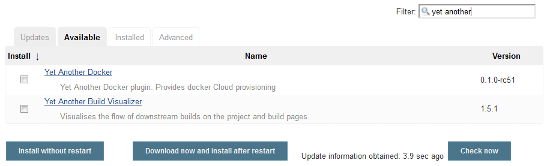
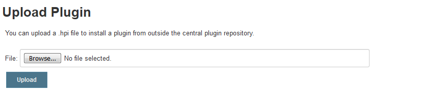
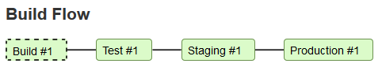
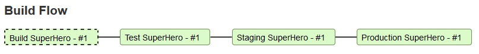

Introduction
Welcome to this workshop briefly describing the Jenkins plugin ecosystem and showing how to contribute a change request to an existing plugin.
Agenda
Outline
When working with Jenkins in your daily business there comes a time when you have a special request that can not be solved using Jenkins core features or is not fully implemented in one of the numerous existing plugins. Before writing a new plugin from scratch you are encouraged to contribute to existing plugins.
In this workshop you will learn how to change an existing Jenkins plugin and adapt it to your needs. In particular we will change the Yet Another Build Visualizer Plugin to show the display name of a build instead of the build number.
The practice part will guide you through first setting up your development environment and forking the plugin into your GitHub account. After implementing the requested change and extending the unit tests your contribution is pushed back as a GitHub Pull Request.
Hopefully this workshop will encourage you to actively help improve Jenkins plugins by contributing code, documentation, translations, or tests. Let's start!
(Source: Jenkins Artwork)
Jenkins Plugins
With more than 1700 plugins available Jenkins build system provides integrations for hundreds of tools and services and therefore allows you to customize almost anything to your needs.
Top Plugin installations (> 2500) (Source: Monthly Jenkins Statistics)
Such a powerful extension system also has its drawbacks:
- inherent complexity for new plugin developers
- version conflicts due to dependencies with core and other plugins
- high maintenance installing, configuring and keeping plugins up-to-date
- out-dated, low-quality plugins written by third parties with losing support
Extensions
Extensibility in Jenkins, for core internals as well as for plugins, is accomplished by definitions of extension points. In general an extension point is an interface or abstract class that defines a contract of what needs to be implemented by contributing classes.
There a mainly two concepts of Descriptors and Describables and Actionable and Actions in order to create new or extend other extension points.
The bulk work in developing plugin consists in implementing those extension points. Whenever a plugin implements such extension points by annotating the class with an @Extension mark, Jenkins automatically detects, creates instances and attaches them to the according extension point instance.
Example Extension
The implementation of the BuildStepDescriptor below registers a new build step called SampleBuilder by marking the Descriptor class with the @Extension annotation.
@Extension
public static class Descriptor extends BuildStepDescriptor<Builder> {
@Override
public String getDisplayName() {
return "SampleBuilder";
}
}
Further Reading
The full list of all available extensions can be found in the Extensions Index.
For further information regarding extending Jenkins in general see Extensibility.
Plugin Installation
Jenkins provides two common methods for installing or updating plugins on the master:
- Plugin Manager (Update Center) in the web UI
- Built-in command line interface (CLI)
After successful download of a plugin and its dependencies a Jenkins master restart is only required if the plugin itself or one of the dependencies are updated from a previous installed version. Otherwise the plugin changes take effect directly.
Jenkins Update Center
Search for plugins under the "Available" tab through the "Manage Jenkins > Manage Plugins" view. Select one or multiple plugins and click "Install without restart" to activate them immediately.

After building a self-contained .hpi file with all necessary code, resources and other dependencies it can be uploaded manually from the web UI through "Advanced" tab.

Jenkins CLI
The Jenkins CLI provides a plugin installation command:
java -jar jenkins-cli.jar -s <JENKINS_URL>:<JENKINS_PORT>/ install-plugin <SOURCE>
The SOURCE part can be given as a local file reference (.hpi file path), download URL or as the short name of an existing plugin.
Further Reading
Collaboration
The Jenkins project and its huge community are always looking for new contributers and encourage you to participate in many ways. Help others get most out of Jenkins, provide your feedback, review changes to code or documentation, or contribute actively to Jenkins core and the numerous plugins.
As a plugin contributor you can adopt a plugin or pick up a feature request or bug report from the issue tracker and send a pull request. Alternatively, start writing a new plugin if none of the existing plugins cover your needs.
Further Reading
The following resources will help you to participate and contribute to Jenkins ecosystem:
- GitHub Source Code (also have a look on README.md, CONTRIBUTING.md and LICENSE files)
- Jenkins Documentation
- JIRA Issue Tracker
- Mailing Lists
Development
This section will cover the main aspects in order to create a new Jenkins plugin from scratch or to contribute to an existing one.
Creating a new plugin
Plugin Archetype
A new plugin can be created from scratch by running following Maven command:
mvn -U archetype:generate -Dfilter=io.jenkins.archetypes:
This invokes the generation of a new plugin from several project archetypes and requests for all mandatory information like groupId, artifactId, initial version and package structure.
Plugin Structure
The plugin workspace is structured as follows:
- Project root: Maven build configuration pom.xml and all the project subdirectories
- src/main/java: Deliverable Java source code files
- src/main/resources: Deliverable resources, such as Jelly and property files for UI
- src/main/webapp: Static resources, such as images and HTML files
- src/test/java: Unit testing classes
- src/test/resources: Necessary resources for unit tests only
Maven POM
Maven is generally used to build Jenkins plugins and stores the configuration in the pom.xml located at the root directory. New plugin are based on the Plugin Parent POM:
<parent>
<groupId>org.jenkins-ci.plugins</groupId>
<artifactId>plugin</artifactId>
<version>3.42</version>
<relativePath />
</parent>
The Jenkins baseline version and Java level are mandatory and can be set via Maven property:
<properties>
<jenkins.version>2.164.1</jenkins.version>
<java.level>8</java.level>
</properties>
Further Reading
Building a plugin
To build a plugin run following Maven command:
mvn install
When rebuilding a plugin it is sometimes helpful to clean the target directory previously:
mvn clean install
This will create a plugin artifact at target/<plugin>.hpi that can be deployed manually to Jenkins.
CI Integration
Hosted Jenkins plugins are automatically built with each commit by placing Jenkinsfile at project root.
#!groovy
buildPlugin()
Further Reading
Debugging a plugin
With help of the Maven HPI Plugin Jenkins plugins can be started in a local Jenkins sandbox.
For debugging purposes run following Maven command from plugin project directory:
mvn hpi:run
By default, the debugging instance is then available at http://localhost:8080/jenkins in your browser.
In order to launch Jenkins on a different port than 8080 use this system property:
mvn hpi:run -Djetty.port=8090
Changing the default context path can be achieved by setting this system property:
mvn hpi:run -Dhpi.prefix=/debug
Debugging from IDE
Starting a debug session from your IDE requires to set special Maven options:
MAVEN_OPTS="-Xdebug -Xrunjdwp:transport=dt_socket,server=y,address=8000,suspend=n"
This allows to hook into the instance and set break points while being in IDE debugging mode.
Changing code while debugging is supported for Jelly/Groovy views, properties and help files with simple page reload in the browser. Utilizing from JVM's hot swap feature does not support changing method signatures. Changes in pom.xml also requires to restart the debugging process.
Further Reading
Testing a plugin
Next to well-known unit testing frameworks like JUnit, TestNG, Spock etc. which can be easily integrated in Java projects, Jenkins provides an own test harness framework built around JUnit to make testing plugins much easier. There are several test techniques included like stubbing, HTML scraping or round-trip testing and provides multiple test harness annotations.
Unit tests can be executed with following Maven command:
mvn test
While building the plugin unit tests can be skipped by appending the Maven command as follows:
mvn install -DskipTests
Further Reading
Publishing a plugin
Packaging
To create a local distribution image of your plugin run the following Maven command:
mvn package
After successful packaging an plugin artifact should be created at target/*.hpi. This .hpi file can then be manually uploaded to the Jenkins Update Center or directly placed in the Jenkins plugin directory (located at $JENKINS_HOME/plugins). The Jenkins master needs to be restarted afterwards.
Hosting
In order to officially host a new plugin in the Jenkins Update Center, meaning it will be available to all Jenkins users worldwide, you first have to meet some prerequisites regarding the plugin structure and open source licensing. Fulfilling those you can request hosting your plugin repository under the Jenkins GitHub organization. It is recommended to add your maintainer information and to create a well-documented and up-to-date wiki page for your plugin.
Further Reading
IDE Support
Because most Jenkins plugins are based on Java and are built with Maven any IDE software can be chosen that provides JVM language and Maven framework support. The Maven HPI Plugin provides an easy way to integrate the plugin lifecycles into the Maven build process.
With help of the Gradle JPI Plugin Groovy and Gradle can be used as an alternative way to build and release such configured plugins.
Jelly Views
XML based tag libraries for writing Jelly views are supported by Stapler plugins available for most modern IDEs (see links to below).
Internationalization
Support for different languages can be achieved by internationalization features in Stapler plugins.
IntelliJ IDEA
NetBeans
Eclipse
Practice
Task
Show the build name instead of the build number in Yet Another Build Visualizer plugin.
You will change the Build Flow view from

to named builds

Note: The original change request in JENKINS-55893 has been already implemented with this commit but is used to be reimplemented just for learning purposes of this workshop.
Requirements
For the practice part meet following prerequisites:
- Personal GitHub Account
- Git
- JDK 8+
- Maven 3+
- IDE (IntelliJ IDEA, Eclipse)
- Alternatives: GitPod, Docker
Set up the development environment
Task
Follow the instructions below to prepare your local development environment, alternatively run with Docker or choose the browser-based online IDE powered by GitPod.
Local Toolchain
For building and developing the Jenkins plugin Java SE Development Kit and Maven are required.
IDE
The preferred IDE for this workshop is IntelliJ IDEA Community Edition because it is free and Maven is shipped with the installation. Alternatively take the IDE of your choice (Eclipse, NetBeans, etc.) you are most familiar with.
JDK
Jenkins core is based on Java and therefore most of the Jenkins plugins also relies on Java or JVM compatible languages like Groovy. For this workshop we will use JDK 8 you can download for free from the Oracle website and install it afterwards. Ensure this JDK is properly configured in your IDE.
Maven
Most of the Jenkins plugins utilize Maven as the preferred build management system. The plugin to be changed is already configured as a Maven project providing a pom.xml.
Download Maven from related Apache project and extract it to an arbitrary path. Afterwards ensure the bin/ subdirectory is added to your PATH in order to invoke mvn from command line.
IDEA: Use the bundled Maven version or change it via Settings > Build Tools > Maven
In order to make Jenkins repositories available during Maven builds edit your ~/.m2/settings.xml (Windows: %USERPROFILE%\.m2\settings.xml) as follows:
<settings>
<pluginGroups>
<pluginGroup>org.jenkins-ci.tools</pluginGroup>
</pluginGroups>
<profiles>
<!-- Give access to Jenkins plugins -->
<profile>
<id>jenkins</id>
<activation>
<activeByDefault>true</activeByDefault>
</activation>
<repositories>
<repository>
<id>repo.jenkins-ci.org</id>
<url>https://repo.jenkins-ci.org/public/</url>
</repository>
</repositories>
<pluginRepositories>
<pluginRepository>
<id>repo.jenkins-ci.org</id>
<url>https://repo.jenkins-ci.org/public/</url>
</pluginRepository>
</pluginRepositories>
</profile>
</profiles>
<mirrors>
<mirror>
<id>repo.jenkins-ci.org</id>
<url>https://repo.jenkins-ci.org/public/</url>
<mirrorOf>m.g.o-public</mirrorOf>
</mirror>
</mirrors>
</settings>
Docker
For building and debugging the plugin inside a Docker container you can use following commands:
Build Plugin
docker run -it --rm -v "$PWD":/usr/src/app -v "$HOME"/.m2:/root/.m2 \
-w /usr/src/app maven:3-jdk-8-alpine mvn install
Run Debugging Instance
docker run -it -d --rm -p 8080:8080 -v "$PWD":/usr/src/app -v "$HOME"/.m2:/root/.m2 \
-w /usr/src/app maven:3-jdk-8-slim mvn hpi:run
GitPod
As an handy alternative without the need to install any tools locally you can use an one-click online IDE. GitPod provides a ready-to-code development environment in your browser.
Usage
- Prefix any GitHub URL with https://gitpod.io#, e.g.:
https://gitpod.io/#https://github.com/cpoenisch/yabv-workshop-plugin - Or use the browser extension for Firefox or Chrome
Fork the plugin
Task
Log in to your GitHub account and fork the repository cpoenisch/yabv-workshop-plugin into your personal account. Then copy the repository URL and clone the repository to your local machine, alternatively create a new project from Git Version Control in your IDE.
Hints
Show / Hide
- Study the GitHub Setup guide how to use a GitHub account
- Read about GitHub Forks
Build the plugin
Task
First import the cloned plugin repository into your IDE as a Maven project.
Run a full build by invoking Maven from command line or IDE integrated terminal:
mvn install
Watch the build log for any build failures and ensure a .hpi file is created in the target directory.
Optionally, install the built plugin to an existing Jenkins master instance.
Hints
Show / Hide
Maven Repositories
Add Jenkins plugin repositories to pom.xml or your .m2/settings.xml
<pluginRepositories>
<pluginRepository>
<id>repo.jenkins-ci.org</id>
<url>https://repo.jenkins-ci.org/public/</url>
</pluginRepository>
</pluginRepositories>
IntelliJ IDEA
- Add Maven framework support
- Configure JDK 8 as project SDK and set Java language level to 8
Ensure that following directories are marked as:
- Source Root: src/main/java
- Resources Root: src/main/resources
- Test Source Root: src/test/java
- Test Resources Root: src/test/resources
- Excluded: target
Implement the changes
Task
Change the Groovy view rendering the Build Flow from displaying the build display name instead of the build number. Rebuild the project to check for any syntax or compiling errors.
Hints
Show / Hide
- Take a look at the JavaDocs for available AbstractBuild methods
- Source file for the Groovy view is located in resources
- Change the current implementation at line 46 from
span("${build.parent.name} #${build.number}")
to
span("${build.parent.name} ${build.displayName}")
Debug the plugin
Task
Instantiate a local Jenkins instance for debugging purposes by executing following Maven command:
mvn hpi:run
Open the local Jenkins instance at http://localhost:8080/jenkins in your browser.
In order to be able to change the display name of a build install the Build Name Setter beforehand. Then create at least two dependent Freestyle jobs and configure them to set the build name to anything other than the build number. Start a new upstream build and check if the change you did is working properly.
Hints
Show / Hide
- Create an upstream job that triggers a downstream job
- Set the build name in the Build Environment section
- The default build trigger can be selected from post-build actions
Write unit tests
Task (optional)
Write a new unit test for the implemented change that is divided into following parts:
ARRANGE: Create an upstream job and a downstream job with arbitrary build names
ACT: Schedule a new upstream build
ASSERT: Assert that the job and build pages contain a Build Flow graph with the set build names
Trigger the new test directly from your IDE or run all tests by executing following Maven command:
mvn test
Hints
Show / Hide
- Configure the Build Name Setter plugin as a test dependency inside pom.xml
- As an alternative use a pipeline test setup setting currentBuild.displayName directly
- Use the Jenkins Test Harness providing a @JenkinsRule to setup the jobs
- Utilize XPath and WebAssert features to test the generated HTML
Create a Pull Request
Task
Commit all your changes to your local development branch and push them to your remote branch.
Navigate to the "Pull requests" tab of your forked GitHub repository and click the "New pull request" button. Ensure that the correct origin repository (cpoenisch/yabv-workshop-plugin) with master branch is set as the base and you head to your own forked branch repository.
Choose a meaningful title for your pull request and give a brief description what you have changed. After your pull request has been reviewed, it can be merged into the repository.
Hints
Show / Hide
- Read about creating GitHub Pull Requests